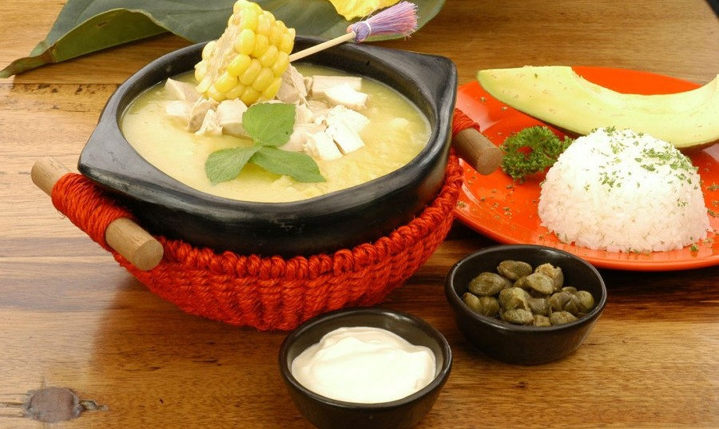

Ajiaco
04-12-2017 Se ponen las pechugas, las papas, la cebolla larga, sal y pimienta a cocinar en agua, durante unos 45 minutos, (hasta que el pollo esté blando y las papas normales, criollas, estén disueltas).
Se sacan las pechugas y la cebolla; Y al caldo se le agregan las mazorcas, que se han cocinado aparte, y se deja conservar a fuego lento hasta lograr la densidad deseada. Se le añaden las guascas 5 minutos antes de servirlo.
Ingredientes
- 3 libras de pechugas de pollo
- 16 tazas de agua
- 4 mazorcas tiernas partidas en trozos
- 2 libras de papa normal peladas y cortadas
- 1 libra de papa criolla peladas y cortadas
- 1 rama de cilantro
- 1 ramo de guasca
- 4 dientes de ajo triturados
- 3 tallos de cebolla larga
- 1 taza de alcaparras
- 1 ½ taza de crema de leche
- 4 aguacates medianos partidos
- Sal al gusto
Preparación
Se ponen las pechugas, las papas, la cebolla larga, sal y pimienta a cocinar en agua, durante unos 45 minutos, (hasta que el pollo esté blando y las papas normales, criollas, estén disueltas).Se sacan las pechugas y la cebolla; Y al caldo se le agregan las mazorcas, que se han cocinado aparte, y se deja conservar a fuego lento hasta lograr la densidad deseada. Se le añaden las guascas 5 minutos antes de servirlo.En caso de que el pollo se desee servir deshilado, se debe agregar en el momento de servirlo. Y en caso de que sea en presa completa, se debe servir una porción en cada plato. También se pueden servir las carnes deshilachadas mezcladas con la crema, y así dar una mejor apariencia.El plato se acompaña con el aguacate; las alcaparras y la crema de leche se sirven aparte para que cada persona se sirva a gusto.Las mazorcas se sirven enteras o desgranadas con el ajiaco.
Sabías que en otras partes del mundo tambien tienen su propio plato tipico llamado Ajiaco ?
Esta sopa puede ser preparada con sobras de asado. Pero si no tiene, se prepara con lomo o posta, se aliña con ajo, pimienta y sal. Luego se asa al horno y se corta en tiras de 4 cm.
Fría la cebolla de pluma en aceite, agréguele sal, ají de color, comino y ajo molidos y una pizca de orégano; agregue a la fritanga papas cortadas a lo largo, luego la carne con su jugo y, cuando todo esté doradito y el aroma indique su punto culminante, traslade el frito a una olla, donde se agrega agua hirviendo o caldo de huesos; se deja la olla en el fuego durante 30 minutos.
Antes de dar por terminada esta obra, se añade un ají verde despepitado, partido en dos y perejil picado.
En el fondo de una sopera se colocan rodajas de huevo duro y sobre ellas se vierte esta sabrosa preparación.


Pasta Carbonara
04-12-2017 Preparación de Salsa Carbonara Tradicional:Comenzamos detallando la elaboración de la auténtica salsa carbonara, la geniuna salsa de origen italiano que se emplea en todo tipo de platos de pasta. Con esta receta puedes preparar una salsa carbonara tradicional para unos cuatro platos de pasta aproximadamente. Si necesitáis una mayor o menor cantidad, emplead la misma proporción de ingredientes para mantener la receta tal cual debe ser. Esta salsa carbonara normalmente se emplea para acompañar platos de pasta, siendo los más normales los espaguetis, pero combinan perfectamente con casi cualquier tipo de pasta.
Empezaremos preparando todos los ingredientes para tenerlos ya listos y a mano cuando nos pongamos a elaborar la receta. Pela los dientes de ajo y córtalo en rodajas finas, cuanto más finas mejor, ya que así podremos degustar su sabor mezclado con los demás ingredientes pero sin que sobresalga demasiado. Los huevos es mejor que estén fuera de la nevera un rato antes de utilizarlos. En cuanto a la panceta, córtala en tiras, a menos que ya lo hayas comprado en ese formato. La panceta es un ingrediente que tiene gran cantidad de calorías, así que cuidado con la cantidad empleada. Si podéis conseguir "guanciale", mejor que mejor, ya que es lo que realmente se emplea en la receta tradicional, aunque la panceta es muy similar.
Para comenzar a hacer la receta tradicional de salsa carbonara, pondremos en una sartén un poco de aceite de oliva virgen extra, muy poco, y cuando esté caliente le añadiremos los ajos cortados para saltearlos un poco. Una vez los ajos estén doraditos, los retiraremos de la sartén y los apartamos para usarlos más tarde. En esa misma sartén donde hemos salteado los ajos cortados, vamos a echar la panceta cortada en tiras. Dórala un poco por ambos lados, sin que se llegue a hacer del todo y quede muy crujiente, pero sin que se nos quede cruda. Retira la sartén del fuego cuando se haya hecho la panceta, y apártala para usar más tarde.
Ahora tienes que coger un recipiente en el que batir los huevos. Hay varias formas de preparar esta salsa carbonara tradicional, ya que en algunos lugares de Italia se preparaba únicamente con las yemas de los huevos, y en otros se empleaba el huevo entero. Usad la que prefiráis, aunque es cierto que al usar la yema sin la clara, el sabor que le da a la pasta es más intenso, por lo que depende del gusto de cada uno. Cuando tengas los huevos batidos, agrégales el queso pecorino o parmesano rallado, un poco de pimienta negra recién molida y una pizca de sal, y vuelve a batir bien para formar una mezcla espesita. A esta mezcla le añadís el ajo y la panceta y ya tenéis la salsa carbonara lista para servir.
Si vais a emplear la salsa carbonara para acompañarla con pasta, una vez que tengáis la pasta cocida y escurrida, antes que se enfríe le añadís la salsa ya mezclada y removéis bien, para el calor de la pasta cocida haga que el huevo se vaya solidificando. Y así de fácil se prepara una rica salsa carbonara tradicional. Si quieres conocer otras recetas para preparar otras variantes de la receta clásica, en esta web podrás encontrar.